MERLIN UI — simulator goldens
Every frame is a real 320×240 RGB565 render from ui-merlin/, produced by replaying the input script shown beside it. Displayed at 2× with nearest-neighbour scaling, so what you see is the device pixel grid. These are the blessed frames in sim/golden/; make check re-renders them and compares byte-for-byte.
boot
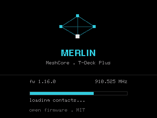
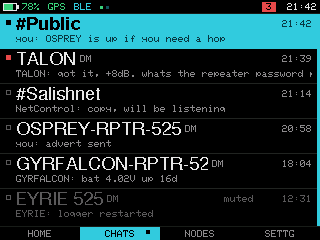
tabs


nodes sorts


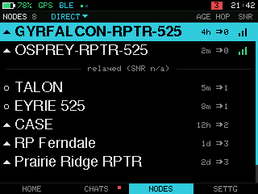
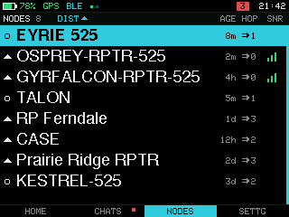
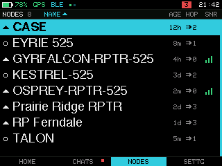

nodes filter
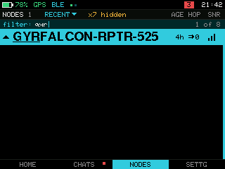
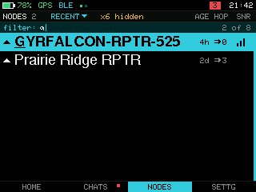

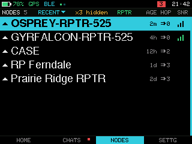

node card
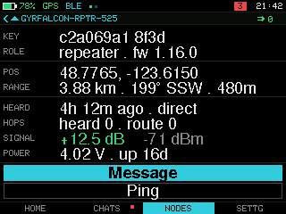
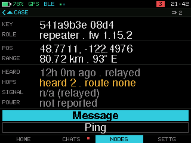
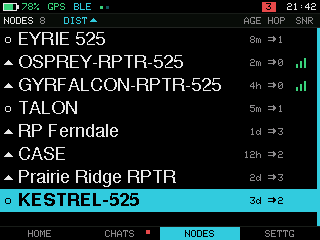
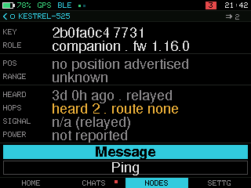
thread
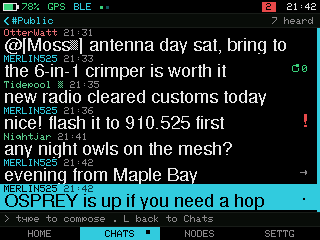
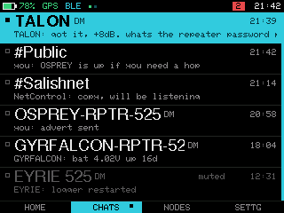
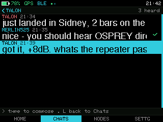
banner
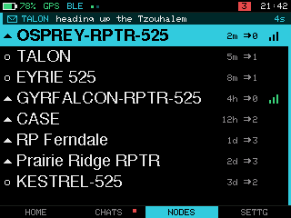
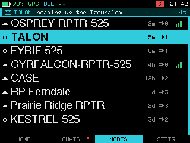
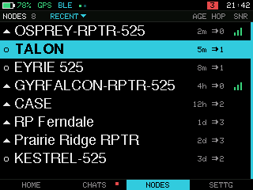
settings radio

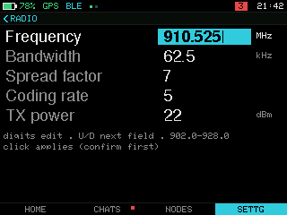
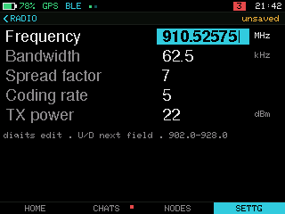
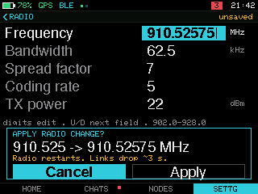
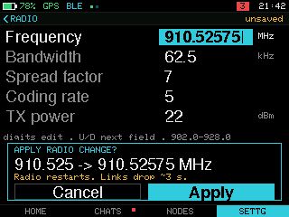
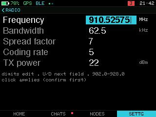
grammar walk

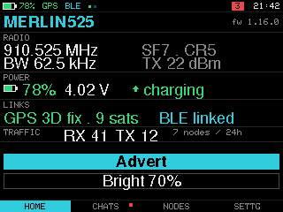
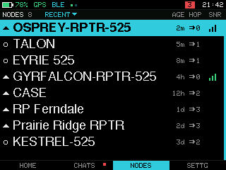

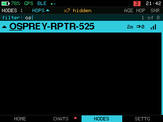
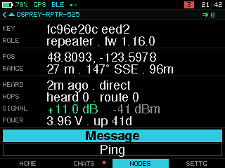
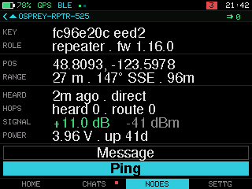


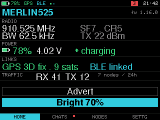
touch
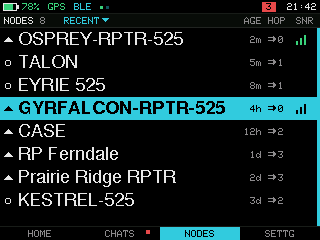

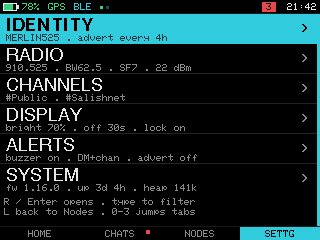
compose
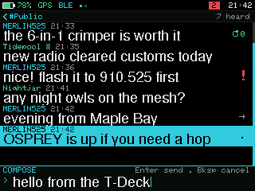
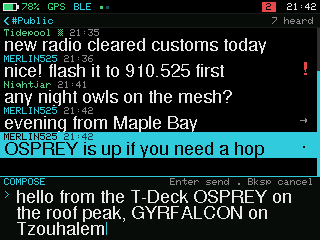
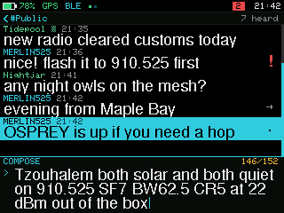
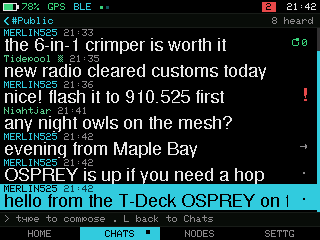
join hashtag
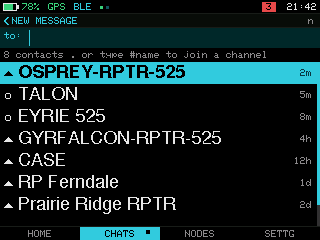
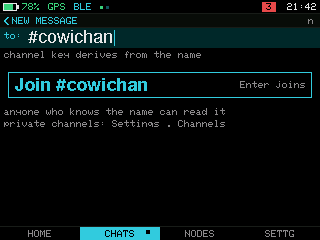
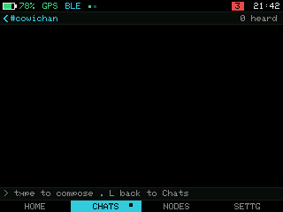
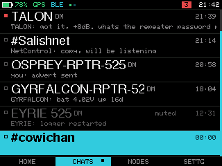
channel create share
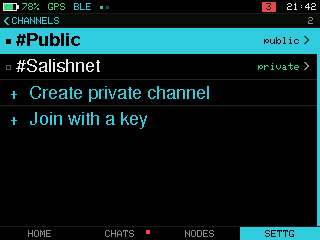
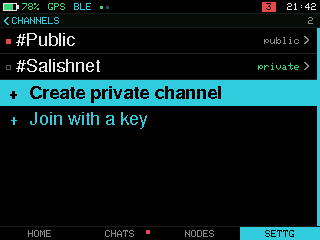
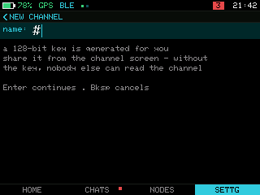
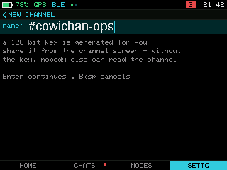
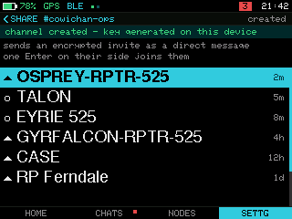
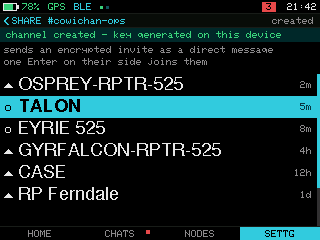
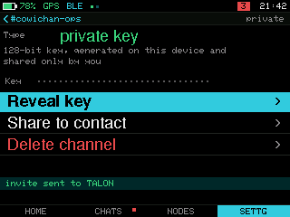
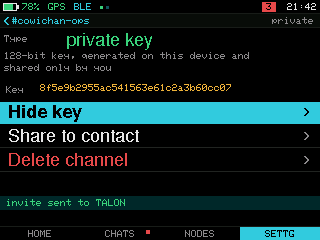
channel join key
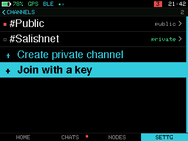
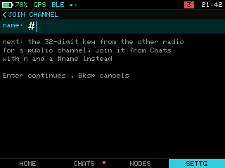
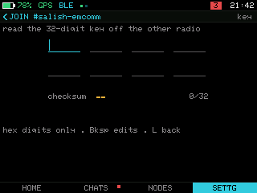
invite received
channel delete
slash filter